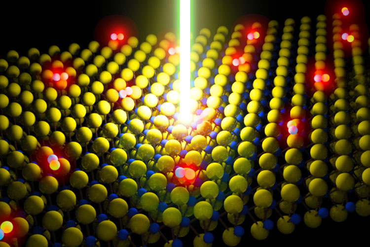
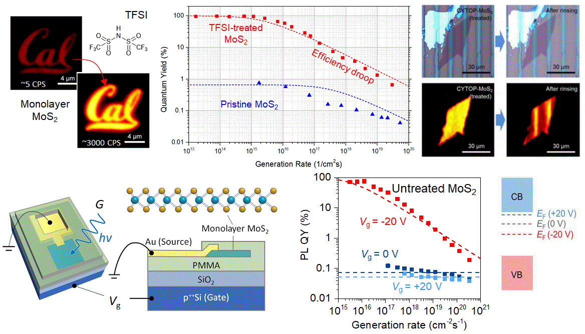
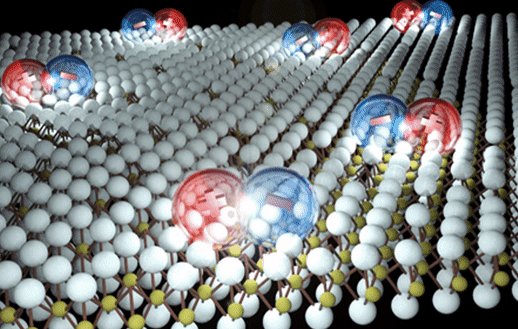
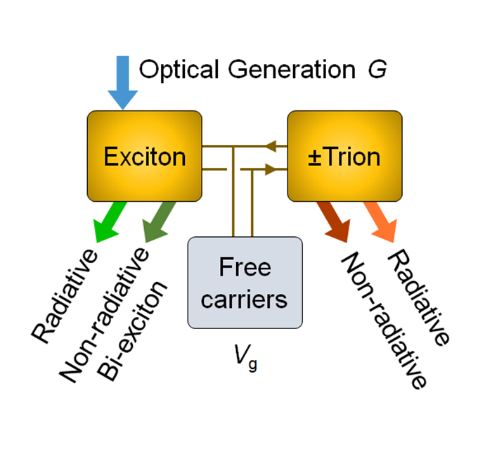
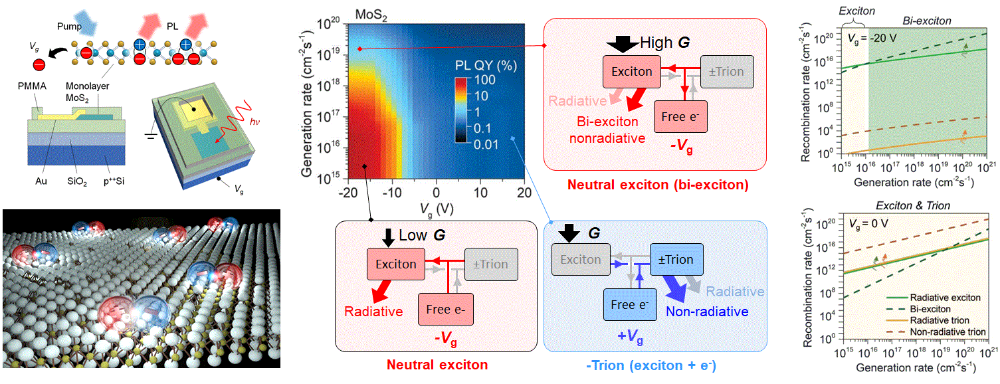
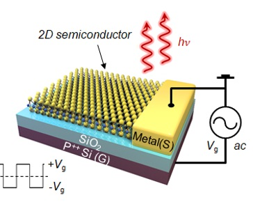
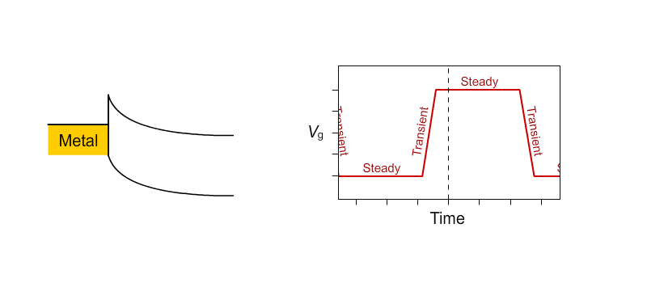
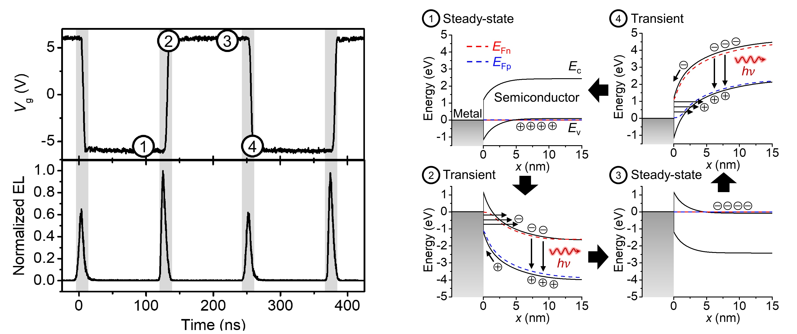
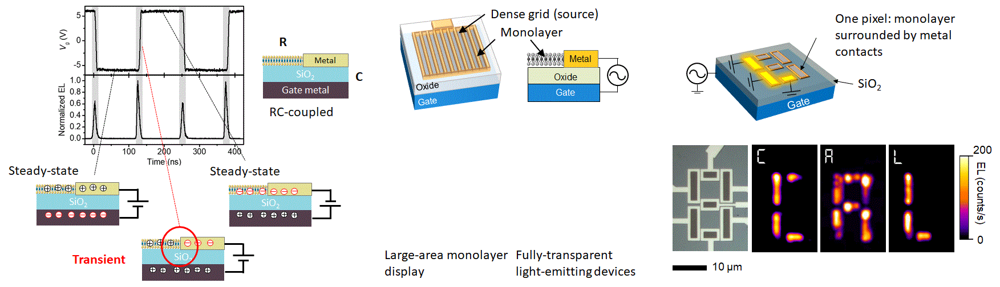

The PL QY of 2D monolayer semiconductors reaches near-unity when they are made intrinsic through chemical treatment or electrostatic doping. Neutral exciton recombination is entirely radiative even in the presence of a high native defect density. This finding enables monolayers optoelectronic applications as the stringent requirement of low defect density is eased.
Photoluminescence quantum yield (PL QY), defined as the number of emitted photons per photogenerated electron-hole pair, is the key metric for the performance of modern optoelectronic devices as it directly dictates the maximum efficiency achievable in light-emitting diodes, lasers, and solar cells. Calibrated measurement of PL QY of these 2D semiconductors was performed as a first step in evaluating their true potential as optoelectronic materials.
As an excitonic direct bandgap semiconductor in the monolayer limit, transition metal dichalcogenides show great promise for optoelectronic applications. However, as-exfoliated monolayer semiconductors, such as MoS2 and WS2, show poor PL QY (~1%). I have developed several brightening strategies. For example, the PL QY of MoS2 monolayers increases from ~1% to over 95% by chemically treating with an organic superacid: bis(trifluoromethane) sulfonimide (TFSI) (Science, 2015). The processing stability and treatment yield of TFSI treatment can be further improved by fluoropolymers (ACS Nano, 2017). Near-unity PL QY in chemically-untreated monolayers can also be achieved at room temperature by electrostatic doping (Science, 2015). This work shows that the underlying mechanism of TFSI treatment is electron counter-doping, which effectively acts as a Lewis acid.


Multiparticle Coulomb interactions are pronounced in monolayer semiconductors, leading to a multitude of recombination pathways, each associated with the different quasiparticles produced by these interactions. A simple kinetic model that involves excitons, trions, biexcitons, and free carriers is introduced to explain the recombination process.
Once semiconductors are thinned down to the atomic level, strong many-body interactions cause new physics to emerge that deviates from well-known free carrier models. A prominent effect is that carriers turn from “free” to “bound” species even at room temperature, so-called room temperature excitons. Using monolayer semiconductors as the platform (i.e., semiconductors at their ultimate thickness limits), I have shown that such thickness-determined excitonic systems are promising for optoelectronic applications due to their near-unity photoluminescence (PL) quantum yields (QYs), a key figure of merit dictating the maximum efficiency achievable in light-emitting diodes, lasers and solar cells.
The PL QY of these materials strongly depends on background charge concentration, and near-unity PL QY in chemically-untreated monolayers can be achieved at room temperature by only electrostatic doping (Science, 2019). The QY is highest when the monolayers are electrically intrinsic. This is surprising, as it indicates that all neutral excitons recombine radiatively even in the presence of native defects. My research reveals that room temperature excitons are robust and bright regardless of monolayer quality, indicating the potential of achieving highly efficient excitonic devices.
The study also shows that PL QY changes as a function of the excitation laser pump power. At the high pump, excitons recombine with each other without emitting light in a process called biexciton recombination. As bright light-emitting devices operate in the high pump regime, this biexciton recombination process will be the limiting factor in practical optoelectronic devices. To describe the photophysics, a simple kinetic model that involves excitons, trions, biexcitons, and free carriers is developed to explain the recombination process in both sulfur- and selenide- based TMDCs. Python code is available here.



To deal with the injection inefficiency caused by Schottky contacts, I developed an AC carrier injection architecture, a device concept that is capable of efficiently injecting carriers in various excitonic systems, including monolayer semiconductors, with demonstrations of bright light-emitting devices from infrared to ultraviolet regimes.
To deal with the injection inefficiency caused by Schottky contacts, I developed an AC carrier injection architecture, a device concept that is capable of efficiently injecting carriers in various excitonic systems, including monolayer semiconductors (Nat. Comm. 2018), with demonstrations of bright light-emitting devices from infrared to ultraviolet regimes. Ohmic contacts to both carrier types are typically a requirement for high-performance light-emitting diodes but are challenging to achieve in practice. This fundamental challenge can be resolved by leveraging transient-mode device operation.
Using monolayers as an example in this dopant-less device (monolayer semiconductors have significant Schottky barriers at metal-semiconductor junctions), an AC voltage is applied to a gate electrode to generate alternating electron and hole populations in the thin semiconductor film. During the ac transients, steep band bending is created at the metal-semiconductor junction, which leads to large tunneling currents that surmount the Schottky barrier height. As a result, bright EL is achieved at high injection levels.
Using this device concept, I demonstrate for the first time a two-terminal monolayer-thick light-emitting device with millimeter dimensions. We achieve a 7-segment display and a 2 mm × 3 mm device which is transparent in the off-state and bright in ambient room lighting. This work represents a fundamental breakthrough in the development of optoelectronic devices with important scientific and practical implications. This transient-EL concept can be extended to large bandgap materials in the future, for which achieving ohmic contacts to both carrier types is particularly challenging.



